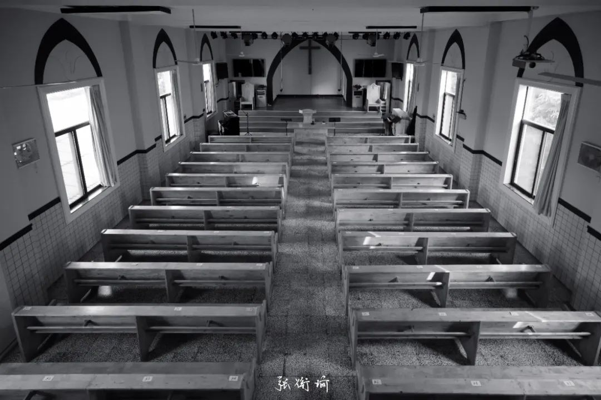
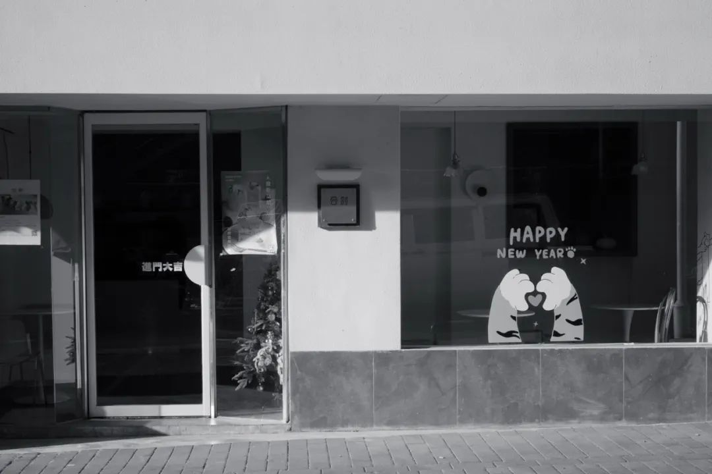
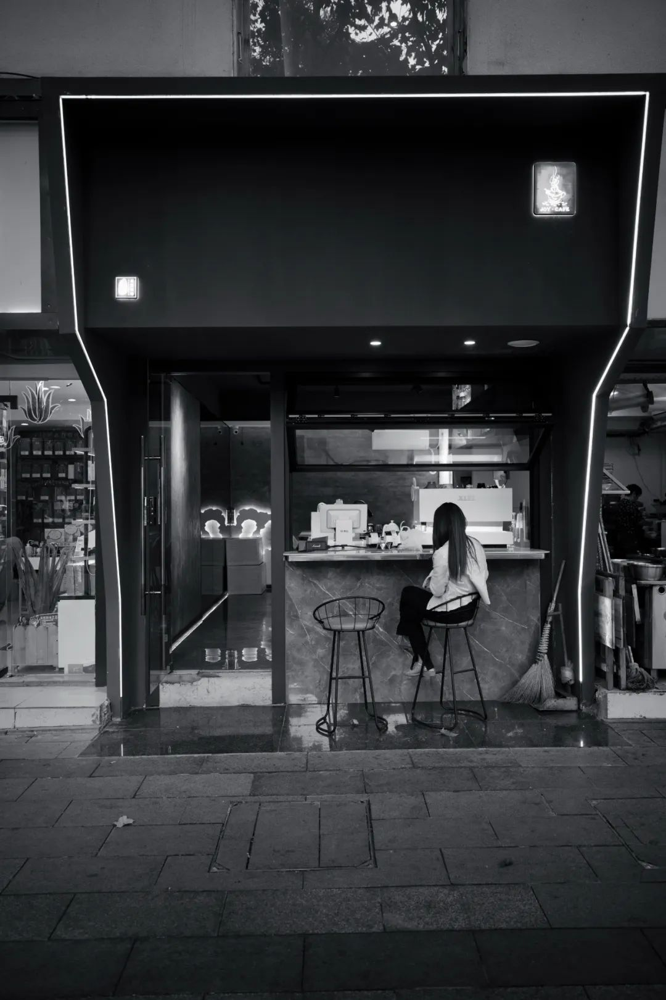
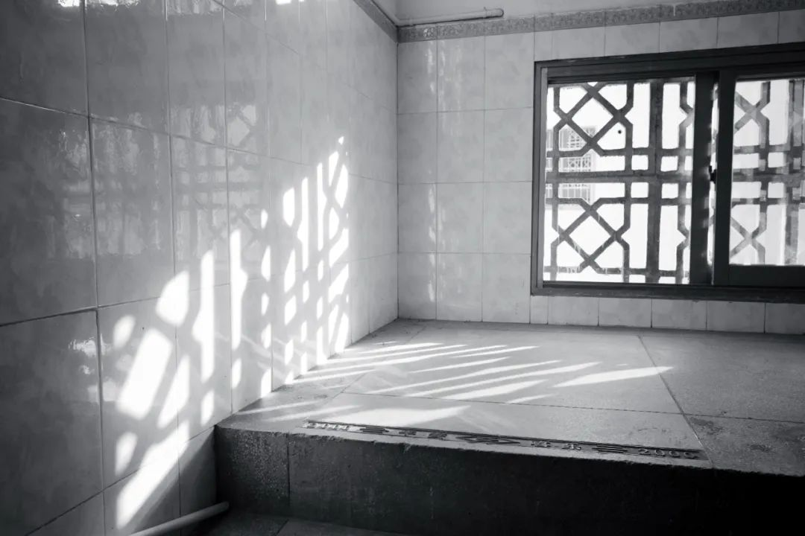
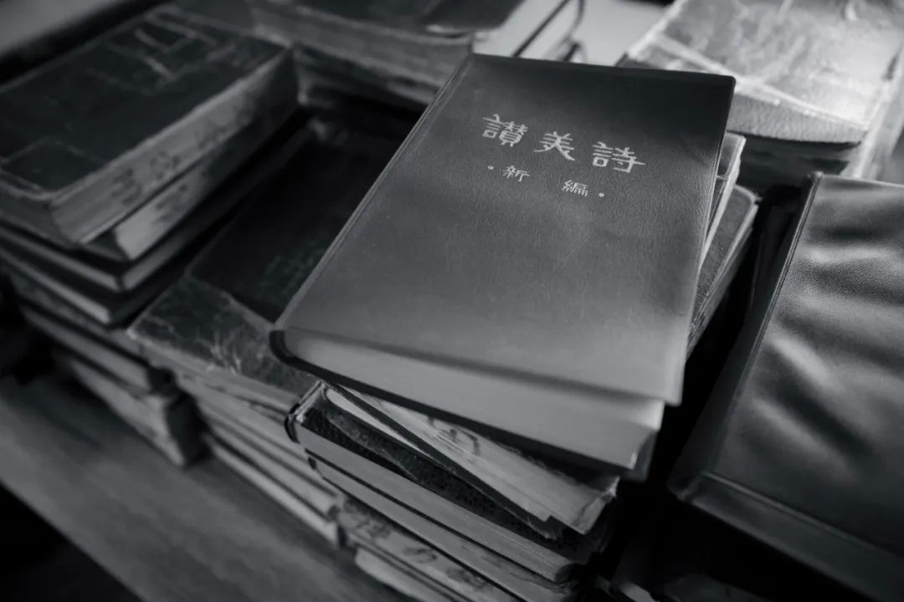
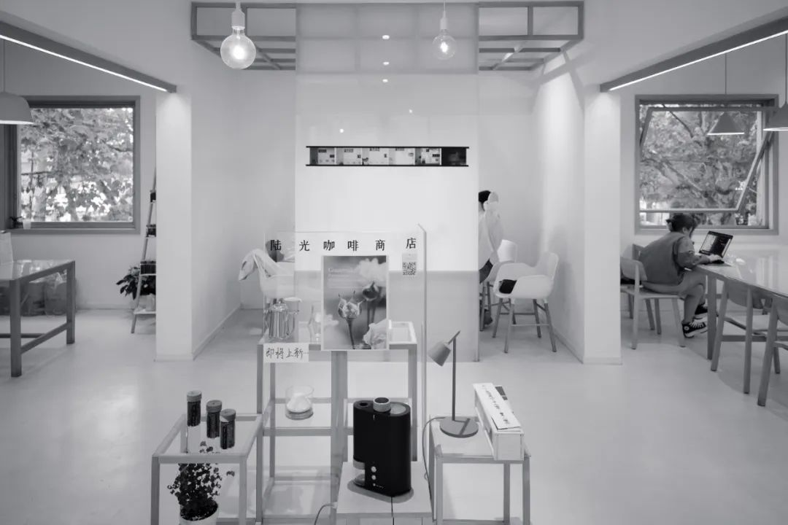
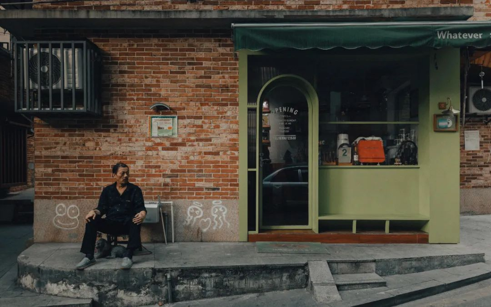
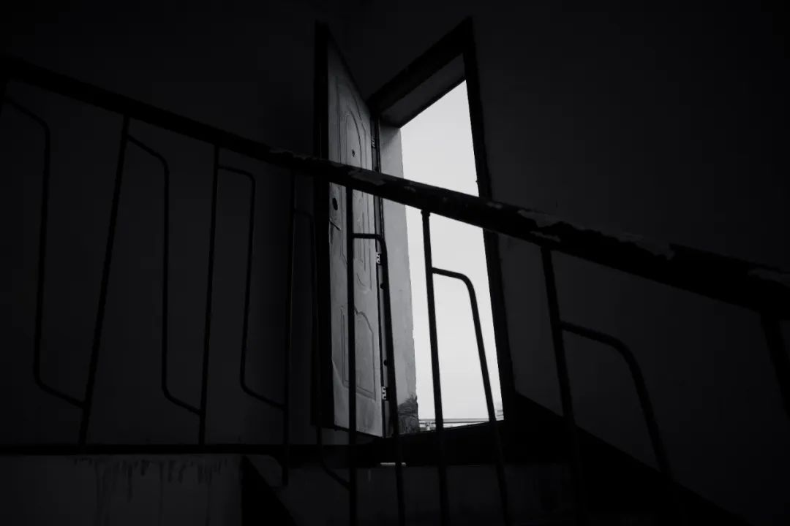

大前天找到了一处打排球的组织。很难想象，自上次在坡排球场随缘训练之后，竟然能在长沙找到一处打室内场的地方。而且，大家球路都很到位、球品也很好不会扯皮打架相互鼓励。如果放在基科西操，是极高质量的野球局了。在场地里打，一晚上，三个小时三十块钱，挺好的，两杯三季虫的钱，消耗二十杯三季虫的热量，这不得赚死。还是好久没运动了。打四十五分钟接应、两小时主攻，还好没去打二传（技术复健自己感觉也还要好久每次从场下回内，就感觉手环在振动。不用想都知道是在报警，心率超过一百八，就像是车速超过一百二那样，在这里过一次，就要提醒一次。三个小时下来，手环指示消耗1200+ kcal，心率超过一百八的时候占到了33 min。也不知道，终有一日到底是我精神状态先崩溃，还是物理生理状态先坍缩也还算好，如果不是打一场球，近几天攒下的烦躁都不知道去哪里杀人每天做梦都想杀人。做梦开车在路上一点也不惊慌，旁边有不长眼睛的电动车横叉过来，我握紧了方向盘，送了点油门但是没打算踩刹车。心里很平静，看这次做梦有没有上次做梦创死别人那么elegant。我可以意识到自己在做梦，而且也会顺应梦境发展，和潜意识配合去有限地制作一个更符合我主观能动的梦境。不失为一项技能。运动完这两天，能明显感觉到身上运动过后的痕迹。平常只有在看那些专门做运动解剖的动态展示时，才会意识到原来一个健身房里的动作需要这么多肌群的参与。现在不同了，现在随时都可以知道我每动一下，都有哪些肌群在参与。我的知晓、敏感度直接来源于神经末梢的反馈。早上去嗦粉，站起身来，股四头肌明晃晃地向大脑传递信号“是的，我在这里，看我一下好吗？”之所以最近会这么躁狂，直接原因还是来自于，应该就快要结束最近一年多以来一直在等啊等的状态。这个状态已经屡次三番搞得我烦死了，不管是什么时候，觉得很搞笑很想讽刺这个世界你还能想出什么新花招来排挤我，哦豁，还真有。世界就一直这么狠狠下去。压力太大就很想去公共撤硕捶门，一边捶一边说Help me Help me, 这样压力就给到里面。你开门啊开门啊开门啊，别躲在里面不出声，我知道你在蹲坑。你知道吗，我的肚子已经开始在打安塞腰鼓了，火红的流苏，还有那落日照大旗马鸣风萧萧，你开门啊别不答应，我现在旋风一样，是飞扬的流苏；乱蛙一样，是蹦跳的脚步；火花一样，是闪射的瞳仁；十月只写了一篇。表达方式可以因为不同的平台而具有一定程度上的偏移，但无论怎样，最终都会返回到一键查询笔者当时所处的精神状态。就好像基因、环境和表现型之间的关系。穿得看起来在路上会有人因为各种原因多看几眼的样子出门，这样可以在进入一些所需要场合的时候进可攻退可守。朋友说看我写的句子就像是下载了一篇最近在知网上发表的水的一批的论文，一堆修饰和限定让本就内涵不多的句子变得像跑步机上挂的一万件衣服一样抵挡不住根本不会用来健身的本质。最近拍了一些照，但不甚满意。我对于相机也没有多少留念了，现在于我而言，最实在的就是一个更舒适的枕头和强力又和缓的安眠镇定pills


十月只写了一篇，不像话。十一月竟然现在就开始写了一篇，令人笑逐颜开喜上眉梢稍稍有点眉目了就仿佛见到了庐山真面目。笔名卢隐的人真的很有文化。忘记在哪个弱智小说里了，谈到在用一个巨大的神魔磨盘来通过观想的方式淬炼精神力。正常人都能看出来，这些个小说的路子都差不多。就像搞摄影的人一直在做过饱和供方市场的互勉一样扯淡。我经常说着说着话，就开始Call back, 这多少是一个习惯。在点开一个软件的时候，不也有很多的广告，稍不留神就跳转到另外一个应用去了。稍微厉害的人可以跟上我的跳跃步伐，但是能跟上我回调函数和多进程处理怎么回到几程之前的人，很少。或者能，但是没必要，我的衣服也这么写艺术。我也发现最近就好像人被投入了一个虚妄的磨盘，或者说碾子，里。碾来碾去。王子皇孙，辞楼下殿，碾来于秦。什么深刻的浅薄的高贵的浓烈的苍茫的宏大的崇高的热切的诡谲的，都来观想一番，扯那个拉倒该来个麒麟哈密水纹生瓜蛋子。什么东西都想吃，但是吃一点就想吐。越吐越想把每一个我想吃的东西都吃到吐，吐到对任何事物想起时都混合着呕吐物的幻觉记忆。
